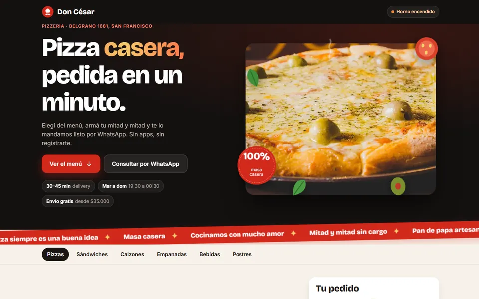
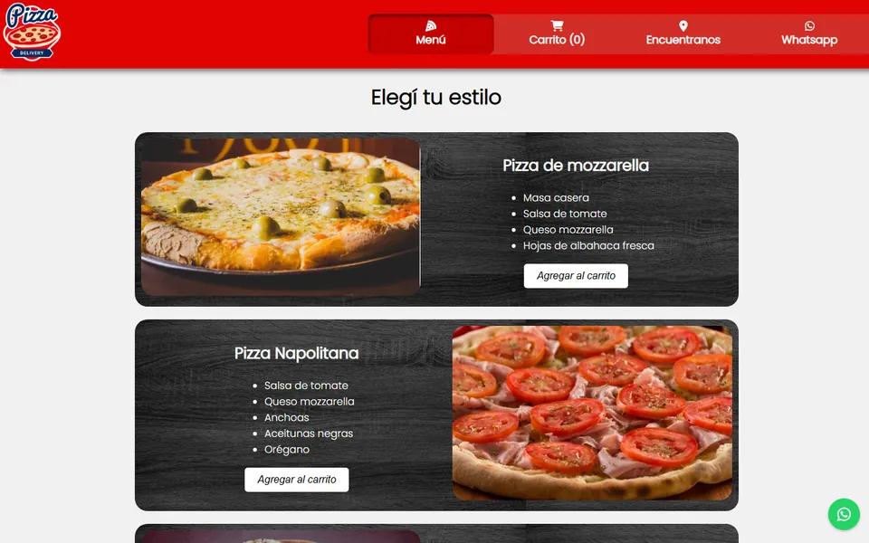
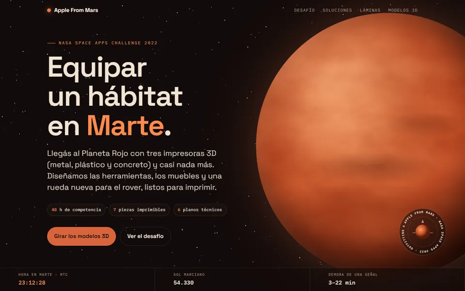
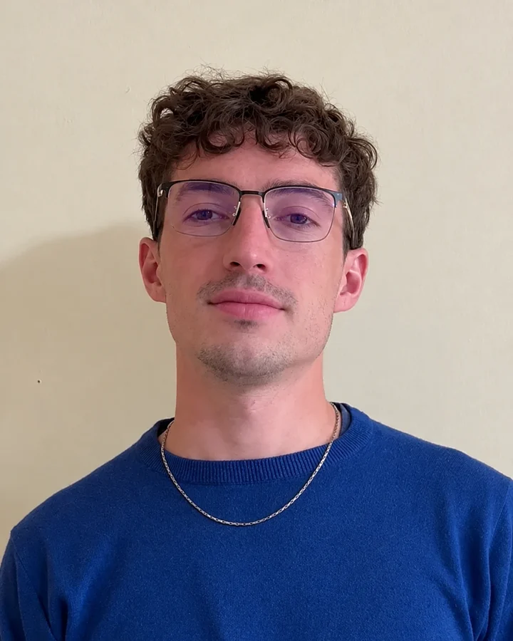

Webs y sistemas a medida
Tu negocio, ordenado y vendiendo.
Que las consultas te lleguen ordenadas y no se te escape ningún cliente. Webs y sistemas a medida para pymes y consultoras.
San Francisco, Córdoba · Te respondo yo, en 24 h hábiles
- Trabajo directo conmigo, sin intermediarios
- Sistemas para organismos provinciales
- NASA Space Apps 2022
Servicios
Cinco formas de ayudarte a crecer.
Landing pages
3–6 díasUna página enfocada en una sola cosa: que te escriban. Para lanzar un servicio, una campaña o un curso.
Sitio profesional
según alcanceTu presencia completa: quién sos, qué ofrecés, casos y contacto. Rápido, prolijo y fácil de actualizar.
Sistemas a medida
MVP desde 2 semanasTurnos, clientes, compras, presupuestos, stock o reportes. Arrancamos con una primera versión usable y la hacemos crecer con tu negocio.
Automatizaciones
según alcanceFormularios que llegan a tu WhatsApp o mail, planillas que se completan solas, avisos automáticos a tus clientes y asistentes con IA que te ahorran tareas repetitivas.
Mantenimiento y mejoras
plan mensual¿Ya tenés una web o un sistema? Lo actualizo, corrijo lo que falla, lo hago más rápido y le sumo lo que haga falta.
Trabajos
Algunas cosas que ya están andando.
 Producto propio · SaaSVer online
Producto propio · SaaSVer onlineFonevo
Sistema de gestión para tiendas de celulares y tecnología: stock por IMEI, ventas, cuentas corrientes, servicio técnico y facturación electrónica. Lo diseño y desarrollo de punta a punta.
 Sistema a medida · gastronomíaDemo a pedido
Sistema a medida · gastronomíaDemo a pedidoGestión para bares
Salón, cocina, barra, caja y stock conectados en tiempo real, en tablets y celulares. Cada producto muestra cuánto cuesta hacerlo y cuánto deja.
 Landing + sistema de gestiónVer landing
Landing + sistema de gestiónVer landingJardinería 2.0
Primero la página para conseguir clientes; después el sistema para atenderlos: agenda de trabajos, cobros, finanzas y equipo con permisos por pantalla.
 Sitio + sistema · pymeDemo a pedido
Sitio + sistema · pymeDemo a pedidoMilo Impresiones
Catálogo online para un taller de impresión 3D y sublimación, con panel de pedidos, stock y clientes, y una calculadora que arma el precio según material, tiempo y margen.
- Sistema a medidaDemo a pedido
SimpleBuy
Sistema de compras hecho a la medida de los procesos de una empresa. Participo desde el inicio y lo sigo ampliando con nuevas funciones.


Demo · gastronomíaVer onlinePizzería Don César
Menú online con el pedido armado que llega al WhatsApp del local. La rehice de cero: arrastrá la imagen para comparar.

NASA Space Apps Challenge 2022Ver proyectoProyecto Marte
En un fin de semana de competencia, una propuesta para equipar un hábitat en Marte con piezas impresas en 3D. Hoy tiene visor 3D de cada pieza y la hora marciana en vivo. Con este trabajo recibí el certificado Galactic Problem-Solver de la NASA.
Cómo trabajo
Simple, claro y sin sorpresas.

Soy Mariano Vatri, desarrollador en San Francisco, Córdoba. Hace más de 4 años que construyo sistemas en equipos de desarrollo; hoy trabajo directo con negocios y consultoras. Me escribís a mí y lo hago yo, sin intermediarios.
Charla inicial
30 minutos, sin costo. Entiendo tu negocio, tu cliente y qué querés lograr.
Propuesta cerrada
Alcance, plazo y precio por escrito antes de arrancar. Sabés exactamente qué vas a recibir.
Diseño y desarrollo
Avances cada semana con un link para que lo veas funcionando y opines.
Lanzamiento y soporte
Lo publico en tu dominio y te acompaño 30 días con ajustes incluidos. Después, si querés, seguimos con mantenimiento mensual.
Para consultoras
Vos diagnosticás. Yo construyo.
Trabajo en equipo con consultores: cuando el diagnóstico dice “acá hace falta una herramienta”, la hacemos realidad sin que tu cliente tenga que buscar a otro proveedor.
- Relevamiento y procesos
- Estrategia y objetivos
- Relación con el cliente
- Web, landing o sistema
- Automatización del proceso
- Puesta en marcha y soporte
Preguntas frecuentes
Lo que todos preguntan.
¿Cuánto cuesta?
Depende del alcance. Después de la charla te paso un precio cerrado, por escrito, y no cambia salvo que vos sumes cosas.
¿Necesito tener dominio y hosting?
No. Si no los tenés, te ayudo a sacarlos a tu nombre para que siempre sean tuyos.
¿Lo puedo actualizar yo después?
Sí. Te dejo un panel simple para cambiar textos, fotos o precios, y una guía corta de uso.
¿Qué pasa si algo falla?
Los primeros 30 días cualquier ajuste está incluido. Después podés sumar un plan de mantenimiento mensual.
Contacto
¿Tenés una idea? Charlemos.
Armá tu consulta en tres toques y te respondo en menos de 24 horas hábiles.
+54 9 3564 33-5655